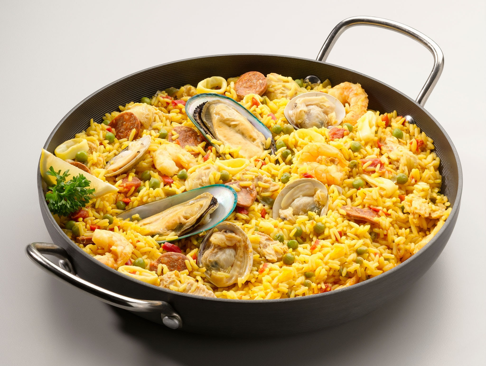

Paella

Paella is a rice dish originally from the Valencian Community. Paella is regarded as one of the community's identifying symbols. It is one of the best-known dishes in Spanish cuisine.
Ingredients
- rice
- saffron
- chicken
- vegetables
Steps
- Sauté: Add olive oil to a skillet over medium heat. Add onion, bell peppers and garlic and sauté until onion is translucent. Add chopped tomato, bay leaf, paprika, saffron, salt and pepper. Stir and cook for 5 minutes.
- Add white wine. Cook for 10 minutes.
- Add chicken & rice. Add chopped parsley and cook for 1 minute.
- Add broth. Pour the broth slowly all around the pan and jiggle the pan to get the rice into an even layer. (Do not stir the mixture going forward!). Bring mixture to a boil. Reduce heat to medium low. Give the pan a gentle shake back and forth once or twice during cooking.
- Cook uncovered: Cook paella uncovered for 15-18 minutes, then nestle the shrimp, mussels and calamari into the mixture, sprinkle peas on top and continue to cook (without stirring) for about 5 more minutes. Watch for most of the liquid to be absorbed and the rice at the top nearly tender. (If for some reason your rice is still uncooked, add ¼ cup more water or broth and continue cooking).
- Cover and let rest. Remove pan from heat and cover pan with a lid or tinfoil. Place a kitchen towel over the lid and allow to rest for 10 minutes.
- Serve. Garnish with fresh parsley and lemon slices. Serve.